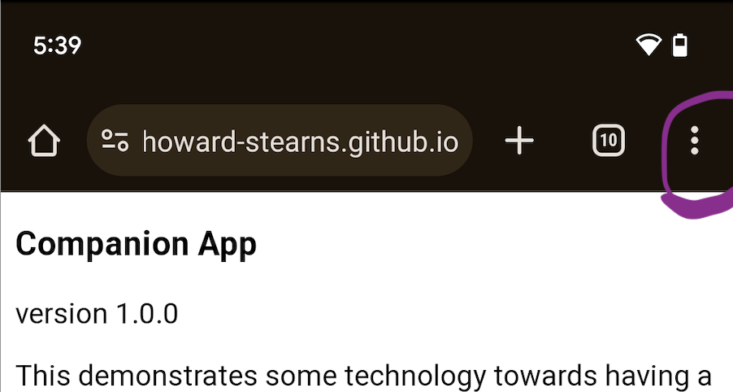
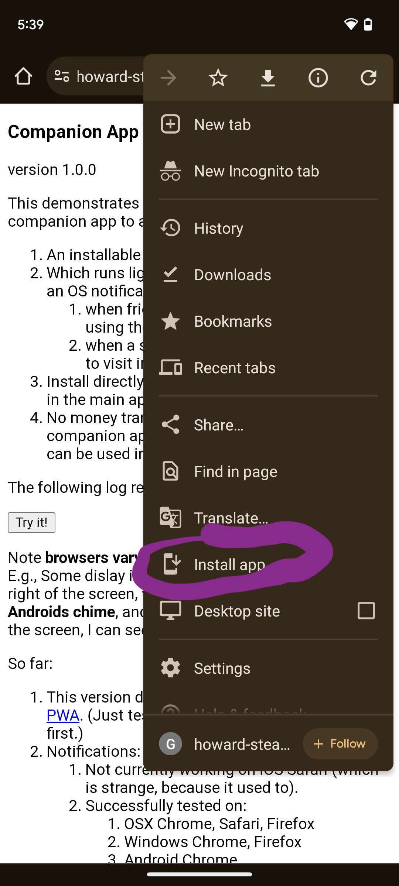

This demonstrates some technology towards having a companion app to another app:
An installable microapp for mobile AND desktop.
Which runs light-weight in background and gives an OS notification:
when friends are online - click to join them using the main app
when someone has sent you a message - click to respond
when a store you follow offers a sale - click to visit in marketplace
Install directly from our website OR from a button in the main app. (No appstore.)
No money transactions in main app - buy in this companion app instead - but after you buy it it can be used in the main app.
The app is a PWA that must be installed. See below. You can try things out from this page here, without installing, and it will issue notifications just fine on many operating-system/browser combinations. But for the full experience, and to work on all operating systems (cough, iOS, cough), you have to install it.
The following log reports what is happening:
Installation
How this is done varies with different browsers:
iOS: Touch the sharing button at the bottom of the browser:
...and then scroll down to "Add to home screen":
Android: touch the "more" button at the upper right of the screen:

...and then scroll down to "Install app":

Desktop Chrome (Windows or OSX): There is a tiny install icon on the right side of the address bar: